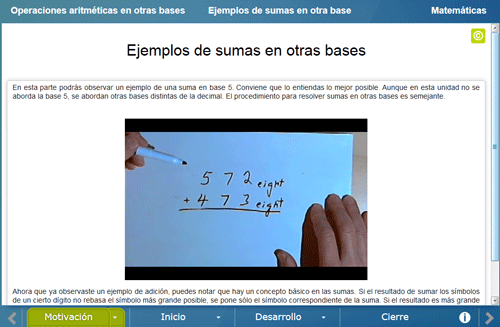

Operaciones aritméticas en otras bases
Operaciones aritméticas en otras bases
 Operaciones aritméticas en otras bases
Operaciones aritméticas en otras bases
El objetivo de esta unidad es continuar con lo visto en la unidad Cambio de base ahora abordando las operaciones aritméticas simples de adición y sustracción en base binaria y hexadecimal. Se presentan al alumno los algoritmos de estas operaciones así como la razón de los mismos.
Consiste en dos páginas. La primera menciona la motivación de razonar estas habilidades más allá de sólo aprenderlas. La segunda presenta un ejemplo de adición en base 5 en forma de un video subtitulado, en el que se muestran diversas estrategias para resolver el problema. De esta manera se busca despertar en el alumno la curiosidad por ver qué se encuentra detrás de los algoritmos de las operaciones y, en particular, descifrar la razón detras de los algoritmos para la base decimal que ya conoce.

Consiste en dos páginas. La primera incluye una escena que aborda el procedimiento para la adición de números binarios, en la que se muestra cómo y por qué se realiza el acarreo de unidades cuando un dígito rebasa el número de elementos máximo permitido en la base binaria. También tiene otra escena que aborda la sustracción de números binarios, en la que se muestra también cómo y por qué es necesario pedir prestadas unidades a dígitos mayores del minuendo para poder resolver la resta.


La segunda página incluye una escena que aborda el procedimiento para la adición de números hexadecimales y una segunda escena para la sustracción de los mismos. El abordaje es muy similar al de la primera página del Inicio descrita anteriormente.


Consiste en 3 páginas que siguen el espírito del Inicio, pero ahora presentando problemas de adición y sustracción de binario y hexadecimal que el alumno ha de resolver por su cuenta. Los problemas llevan cierto grado de retroalimentación, sin proporcionar la respuesta de manera evidente. La primera página se dedica a la suma y resta en base binaria.


La segunda página se dedica a la suma y resta en base hexadecimal.


La tercera página se dedica al producto en base hexadecimal. Presenta una escena con ejemplos de la multiplicación de un hexadecimal de 3 dígitos por uno de 2. Vuelve a ser sólo un ejemplo (sin ejercicios) que pretende que el alumno entienda el procedimiento de producto en esta base y lo extrapole a la decimal que ya conoce para elucidar el algoritmo del producto que suele sólo memorizarse. Este ejemplo también pretende despertar la curiosidad para que el alumno busque por su cuenta cómo se multiplica en base binaria o, inclusive, en otras bases no abordadas en esta unidad.


Consiste en una página de texto en donde se comenta que, además de la utilidad de aprender a operar números en otras bases para las ciencias, el entender el procedimiento en otras bases permite reafirmar el procedimiento en base decimal. Así, se llega a entender el porqué del proceso. Se hace mencion, asimismo, de que hay cosas en común a todos los procedimientos independiente de la base, y se deja al alumno dicho análisis.
| Diseño del contenido | Alejandro Radillo Díaz, LITE |
| Diseño funcional | Alejandro Radillo Díaz, LITE |
| Programación | Alejandro Radillo Díaz, LITE |
| Asesoría de programación |
Oscar Escamilla González, LITE |
| Diseño gráfico | Francisco Varela Fuentes |
| Coordinación | Leticia Montserrat Vargas Rocha, LITE |
| Desarrollo del contenedor | Oscar Escamilla González, LITE |
Los contenidos de esta unidad didáctica interactiva están bajo una licencia Creative Commons Reconocimiento-NoComercial-CompartirIgual.
La unidad didáctica fue creada con Arquímedes, una herramienta de código abierto.
La unidad didáctica contiene escenas elaboradas con Descartes, una herramienta de código abierto.
LITE - UnADM 2014